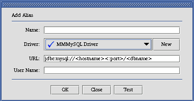

icon next to a driver indicates that it has been successfully loaded while
the
icon next to a driver indicates that it has been successfully loaded while
the
 icon indicates that the JDBC driver could not be loaded and so cannot be
used to connect to a database.
icon indicates that the JDBC driver could not be loaded and so cannot be
used to connect to a database.
SQL Client Quick Start |
SQuirreL SQL Client is a graphical Java program that will allow you to view the structure of a JDBC compliant database, browse the data in tables, issue SQL commands etc.
It is free software, and you are welcome to redistribute it under the terms of the GNU Lesser General Public License.
From version 1.1 on SQuirreL SQL Client requires JDK1.3 to work. If you need a version compatible with JDK1.2 then download SquirreL SQL Client 1.0.
Installation is via the IzPack Java installer. Download the file squirrel-sql-<version>-install.jar and execute it with the command:
java -jar squirrel-sql-<version>-install.jar
For Windows the file squirrel-sql.bat will run the application. For Unix the file is squirrel-sql.sh. The squirrel-sql.jar file is executable so on those operating systems that support it you can run SQuirrel by doubleclicking squirrel-sql.jar. You can also run it by issuing the following command:
java -jar squirrel-sql.jar
Just remember that when executing the jar file directly you don't use your current class path ($CLASSPATH on Unix or %CLASSPATH% on Windows) so if you have your JDBC drivers in your class path then SQuirreL won't see them. See The Driver for more information.
Some people have reported core dumps with the Sun JDK1.3.1 running under Linux. If this happens passing the -classic flag to the java executable appears to fix the problem. No similar problems have been reported with any other JDK on Linux.
The command line option -nosplash can be passed to the main class in order to start SQuirreL without the splash screen appearing. E.G.
java net.sourceforge.squirrel_sql.client.Main -nosplash
The command line option -noplugins can be passed to the main class in order to start SQuirreL without loading any of the plugins.
java net.sourceforge.squirrel_sql.client.Main -noplugins
The user settings directory can be overridden by the -settingsdir option. E.G.
java net.sourceforge.squirrel_sql.client.Main -settingsdir=c:\my-squirrel-settings
The configuration file for log4j is specifed by the loggingConfigFile option. E.G.
java net.sourceforge.squirrel_sql.client.Main -loggingConfigFile=c:\config.properties
The application directory is specified by the squirrelHome option. This tells SQuirreL where to look for plugins etc. Normally this should be the directory that you installed SQuirreL into. E.G.
java net.sourceforge.squirrel_sql.client.Main -squirrelHome=$SQUIRREL_SQL_HOME
To return to the standard theme for the metal Look and Feel pass the -usedefaultmetaltheme option. E.G.
java net.sourceforge.squirrel_sql.client.Main -usedefaultmetaltheme
A number of default driver definitions ship with SQuirreL SQL Client. These are added to the Drivers List window (View Drivers option on the Windows menu) when you first start up SQuirreL SQL Client.

The
icon next to a driver indicates that it has been successfully loaded while
the
icon indicates that the JDBC driver could not be loaded and so cannot be
used to connect to a database.
All of the default driver definitions assume that the JDBC driver
classes are in the current class path or in your JRE extensions
directory (consult the documentation for your Java implementation for
more information on this). If this is not the case you will need to
modify the driver definition to point to the jar file or the classes
directory that contains these classes.
You can create new driver definitions using the New Driver option on the Drivers menu.

This is an example of a driver definition. This dialog can be displayed by selecting a driver definition in the Drivers List window and then selecting the Modify Driver option from the Drivers menu.
The Name text field specifies an easy to remember name for the database driver definition and is the text shown in the Drivers List window.
The Example URL shows an example URL for this driver. This can be found in the documentation that comes with the driver.
The entries in the Java Class path tab show the directories and jars in the current class path. If you click on a jar file and press the List Drivers button then the class names of all the JDBC drivers in that jar will be placed in the Class Name dropdown control.
The Class Name specifies the class name of the JDBC
driver. Either select an existing entry in the dropdown or key in the
class name of the JDBC driver (it can normally be found in the
documentation that comes with the driver).
The Extra Class Path tab allows you to select a JDBC
driver that is in a jar file or a directory that is not in the current
class path.

The Add button will display a File Open dialog allowing you to select one or more jar files or directories. The Delete button allows you to remove a jar file or directory from the list. The Up and Down buttons allow you to change the sequence of the entries. The List Drivers button will place the class names of all the JDBC drivers in the currently selected jar file into the Class Name dropdown.
Press the OK button to save the driver definition and close the window or the Close button to close the window without saving any changes.
Now you need to create an alias to your database.
Display the Aliases List window (View Aliases option on the Windows menu). When you run SQuirreL SQL Client for the first time this window will be empty.

Take the New Alias option from the Aliases menu and the following dialog will be displayed.
Enter an easy to remember name in the Name field for this database URL. This is the text that will be displayed in the Aliases List Window.
Select the driver for this alias from the Driver dropdown or click on the New button to create a new driver definition.
Change the URL to point to your database.
Optionally enter a user name if you want the alias to default to a specific user.
The Test button will allow you to attempt to connect to your alias to ensure that the parameters you have entered are correct.
Press the OK button to save the alias definition and close the window or the Close button to close the window without saving any changes.
The new alias should now appear in the Connect To dropdown. Select it in the dropdown and enter your user name and password in the connection dialog, press OK and you should be connected.
When you first connect to a database a Session window will be shown.

The Object Tree on the left shows the structure of the database. Clicking on various nodes within this object tree will show further information in the right hand detail panel. In this example the database metadata is shown. Clicking on the title of a column will sort the display by the data in that column. This is true of all tabular displays in SQuirreL.

This shows the data displayed when a table is selected in the Object Tree.
SQL can be executed from the SQL tab in the window that opens once you have connected to an alias. Multiple statements can be executed and the results will be displayed in multiple tabs below the SQL entry area.
When the SQL tab is selected pressing <ctrl><enter>, taking the Execute SQL option from the Session menu or pressing the Execute SQL button in the session window tool bar will execute the entered SQL.
If a single statement is entered then pressing <ctrl><enter> will execute just that statement.
If you only want to execute part of the SQL entered then hightlight the SQL that you want to execute and press <ctrl><enter>.
To only execute a single statement amongst several statements (separated from the other statements by at least one blank line) within the SQL entry area then click on the line containing the statement that you want to execute and press <ctrl><enter>.
The characters -- at the beginning of a line will turn it into a comment.

As can be seen in the above graphic, doubleclicking in a cell in the query results will open up a new window showing the entire contents of the cell.
The  icon on the tabbed folder
containing the SQL results allow you to "tearoff" the query
results from the tabbed folder and display it in its own window.
icon on the tabbed folder
containing the SQL results allow you to "tearoff" the query
results from the tabbed folder and display it in its own window.

Global Preferences specify configuration settings for the application.
Show Window Contents While Dragging - If checked this shows the contents of windows as they are being dragged. If unchecked only the outline of the window will be shown. Uncheck for a speed improvement on slow machines.
Show Tooltips - If checked then tooltips (or hints) will be shown when the mouse "hovers" over some controls.
Use Scrollable Tabbed Panes - When running version 1.4 or above of Java selecting this checkbox will display the tabs in tabbed folders in a scrollable region rather than wrapping them when all tabs will not fit within a single run.
Show Main Window Tool Bar - If checked then the tool bar will be displayed in the main window.
Show Main Window Status Bar - If checked then the status bar will be displayed in the main window.
Show Drivers Tool Bar - If checked then the tool bar will be displayed in the Aliases Window.
Show Aliases Tool Bar - If checked then the tool bar will be displayed in the Aliases Window.
Execution Log File - This (display only) setting tells you the name (and location) of the logging file for SQuirreL. For more information see Logs.
Configuration File - This (display only) setting tells you the name (and location) of the logging configuration file for SQuirreL. For more information see Logs.
Login Timeout - Sets the maximum time in seconds that a JDBC driver will wait while attempting to connect to the database.
JDBC Debug - If checked tells the JDBC drivers to write debugging information to the JDBC Debug File. Depending on the JDBC driver you are using this may generate a lot of output and significantly slow down the your queries.
JDBC Debug File - If JDBC Debug is checked then this (display only) setting is the file that the debug information will be written out to. If the file name is too long for the label then the full name will be displayed in a tooltip.
Use Proxy - If checked then a HTTP proxy server will be used for connecting to servers.
Server - The name (or IP address) of your proxy server.
Port - The port number to use on the proxy server.
User - The user name to use to log onto the proxy server.
Password - The password to use to log onto the proxy server.
No Proxy For - A list of servers (separated by |) that do not need to be accessed through your proxy server.
Use Proxy - If checked then a SOCKS proxy server will be used for connecting to servers.
Server - The name (or IP address) of your proxy server.
Port - The port number to use on the proxy server.
Show Tool Bar - If checked then display a toolbar on the session window.
Meta Data - Specify the output type for meta data displays.
SQL Results Specify the output type for SQL result displays.
Auto Commit - If checked then all SQL will be automatically commited after it is executed. If unchecked then you will be able to use the "Commit" and "Rollback" options on the "Session" menu.
Commit on Closing Session - If "Auto Commit" is not checked then this option controls whether or not a "Commit" is issued prior to closing a session. If this option is not checked then you will lose all uncommited work when the session is closed. Only applicable if "Auto Commit" is not checked.
Show Row Count for Tables - Show the number of rows for each table in the object tree. This will slow down the building of the object tree.
Contents - Limit Rows/Number of Rows -
SQL - Limit Rows/Number of Rows -
Statement Separator -
Start of Line Comment -
Binary -
VarBinary -
LongVarBinary -
Blob -
Clob -
Font -
A plugin is an application written in Java that runs within SQuirreL. This allows developers to enhance the functionality of SQuirreL without having to rebuild the SQuirreL application itself. It also allows you to "pick and choose" the functionality that you want in SQuirreL. For instance if you don't use Oracle then you don't need the Oracle specific functionality supplied by the Oracle plugin.
Plugins can be downloaded from the SQuirreL web site http://squirrel-sql.sf.net
To install a plugin unpack the zip or gz file into the plugins directory within the SQuirreL SQL Client application directory keeping the directory structure. To use the plugin you will need to restart SQuirreL.
The "Summary" option on the "Plugins" menu will display a dialog box showing the plugins currently installed.

select * from table1 where entered_date =
{d '2002-12-01'} then the following will be appended to the
SQL entry area. select * from table1 where entered_date =
TO_DATE ('2002-12-01', 'YYYY-MM-DD')